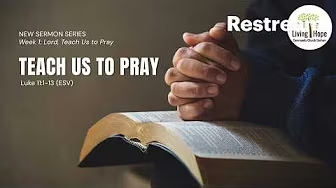
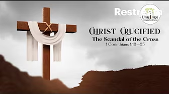
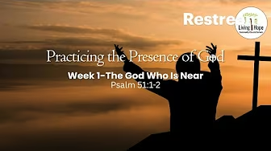
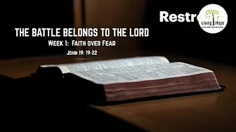
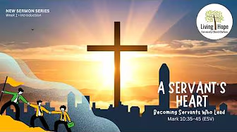
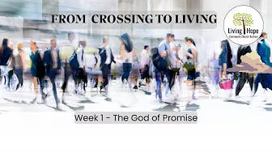

Lord, Teach us to Pray

- Week 2: Our Father - Matthew 6:5-15
- Week 1: Teach us to Pray - Luke 11:1-13
Messages from our church
Listen, watch, and reflect on messages from our worship gatherings.
Current Sermon Series
Pastor Mark Jallim
Join us as we learn how prayer shapes our relationship with God, strengthens our dependence on Him, and deepens our confidence in His care.
Latest teaching
Spend time in Scripture with us as we explore the heart of Jesus’ teaching on prayer.
Past sermon series






Guest speakers